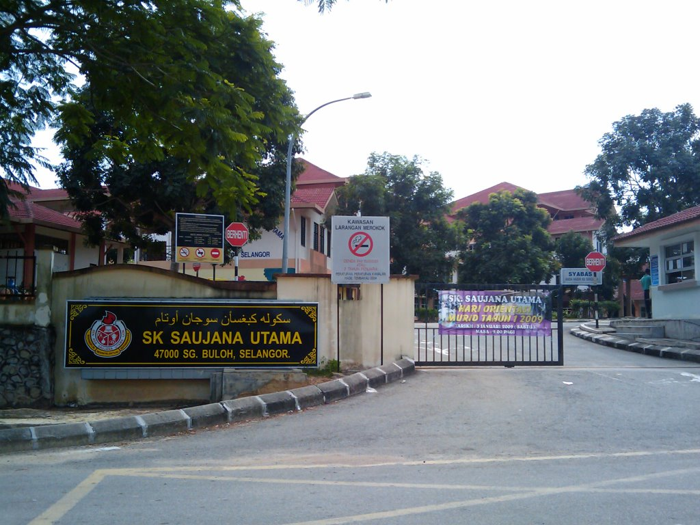
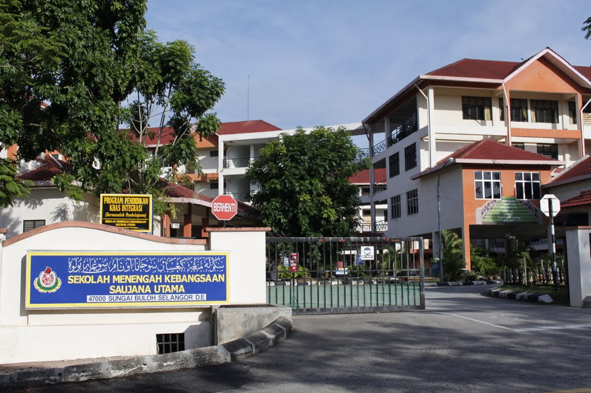

Sekolah Kebangsaan Saujana Utama. The name of my primary school.
This is where my "real" school experience begin after kindergarten. This school was located less than 1 km away from my house.
Yes, I can just walk to school by myself everyday but I didn’t.
My parents picked me up from school every day, hehe :D. I spent a great time there.
I still remember all the teachers that used to teach me plus I still keep in touch with them until now…because we are neighbours. Hahahaha.
They are so nice and care about me. I love this school so much. When I was in standard 3, I was offered to be a school prefect by my teacher, Mrs. Rozita.
Here comes the fun part. I was known as a very “quiet” and “shy” student. How come this kind of student will become a school prefect? I was wondering too.
However, my teacher said that she want to change me, she really believe in me and yeah I passed the interview and got nominated for school prefect for 4 years
which means until I’m in standard 6.I learnt so much during the years and it really does change me to a better student.
I get chance to make a lots of friends and I also get to improve my studies. I got 4As 1B as my Primary School Assessment TestUPSR result and
that is one of my biggest achievement during my primary school that keep me smiling whenever I think about it.

This is a picture of my friends and I when we were in Standard 6. From left side is me, Nadhirah and lastly Batrisyia.
They are my bestfriends and we were always go everywhere together.

After I finished standard 6, I moved to the secondary school which is Sekolah Menengah Kebangsaan Saujana Utama.
I feel so glad and blessed to have the opportunity to study here.
I was surrounded by good people and good environment. Oh no, I miss school so bad! SMK Saujana Utama was located right next to my old primary school and we actually share the same school's field. SMK Saujana Utama is a very big school with a huge amount of students.
I really had a great experience to be in this school as I'm very active student during my highschool year.
I get participated in so many school activities and I also joined school camping! It was very tiring yet so fun!
I still remember the teacher that bring us to the camp. It was planned by our late Perdagangan Teacher, Mr. Razali Mohd.
He is my favourite teacher. He loves to give advices to me and always encourage me to do well in my study. Unfortunately, he got sick due to overworking.
I get the chance to visit him at his house for the last time but he can't barely talk and the only word that came out from his mouth was him telling me that he is in pain. I asked him to pray for me as the SPM was around the corner. He nodded and smiled. His smiling face while in pain is what keep me stronger.
He left us the next day after and it is the day before our graduation day. I was grateful that I get the chance to meet him and talk to him for the last time.

This is a picture of my classmates with our class teacher, Mrs. Mazilah when we were Form 5.
This picture was taken before we sit for Sijil Pelajaran Malaysia (SPM) examination.
We were in the same class since Form 4 and ever since then, we cannot be separated :D
They are the best people that I have ever met! I had so much fun during my secondary school because of them.
Alhamdulillah, all of us pass the SPM examination with flying colours. I got 6A 3B+ as my SPM result.

I ended my school life by continuing my studies to the diploma level.
I took Diploma in Library Management in one of the public university in Malaysia which is University Teknologi MARA in Kedah.
I’m kind of nervous and also excited at first to
continue my studies since this is my first time to be away from home and my family but Alhamdulillah everything went very well.
There are so many things that I have learned in this university. I love UiTM Kedah so much and I miss studying there. This is the place where
I get to know more good people and the place that teach me to be discipline and independent. University's life really help me in building my confidence plus all the lecturers
also are very kind and helpful. They always help me by teach me on how to be confident in presentation and always offer me ideas and advices. There are many facilities and
services that are provided for the students here. I'm very glad to be one of the student of UiTM Kedah.

Now, I’m currently pursuing my studies to degree level which I’m taking Bachelor
of Information Science (Hons) Record Management in UiTM Segamat, Johor. Since we are ODL, I don’t really get the chance to get to know my new classmates but I think they all
are nice and kind! I hope that I’m in the right path and I will try my best to finish this
degree and make my parents proud of me. I also wanted to contribute back to my universities
if I have a chance to do so one fine day!

This is my new classmates in UiTM Johor! We only get to the chance to meet each other during Semester 2.
I hope that after this we get to meet each other oftently.


-This website is develop for IMS456(Basic Web Design and Content Management). Any information or material are used for educational purpose only.-